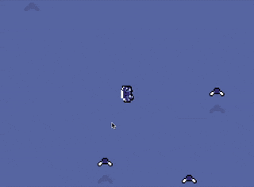

For the last week I've been slowly working on a game in the Go programming language. It's my first real go at it (pun intended), and I've been enjoying it a lot. I'm using Ebitengine for the graphics and sounds, and everything else is done manually.
All the code for this game is on GitHub.
It's quite straightforward, I have a Game struct, with all the images I need and the state of the game:
type Game struct {
FROG_IMAGE *ebiten.Image
OPEN_FROG_IMAGE *ebiten.Image
FLY_IMAGE *ebiten.Image
TONGUE_IMAGE *ebiten.Image
CATCH_IMAGE *ebiten.Image
CARD_IMAGE *ebiten.Image
CONFUSED_FLY_UPGRADE_IMAGE *ebiten.Image
FASTER_FLY_UPGRADE_IMAGE *ebiten.Image
MORE_FLY_UPGRADE_IMAGE *ebiten.Image
flies []Fly
catchEffects []CatchEffect
upgrades []Upgrade
time int
frog Frog
audioContext *audio.Context
audioChomp *audio.Player
audioCatch *audio.Player
}
When the script is run, each image is loaded from my assets folder:
image, _, err := ebitenutil.NewImageFromFile("assets/sprites/<image-name>.png")
if err != nil {
log.Fatal(err)
}
My current implementation has this exact block of code for each image in the game struct. I'm thinking of a better ways to manage loading images. For one, images should most likely be kept separate from the game state. Second, loading each image individually is a little tedious.
Lastly I have Update and Draw functions to handle all the game functionality and all the game rendering. Go has been my first introduction to pointers, and so far they have been incredible. Though, I have heard dire warnings of pointers... It may only be a matter of time before I am betrayed.
Here's a GIF of the game in it's current state:
